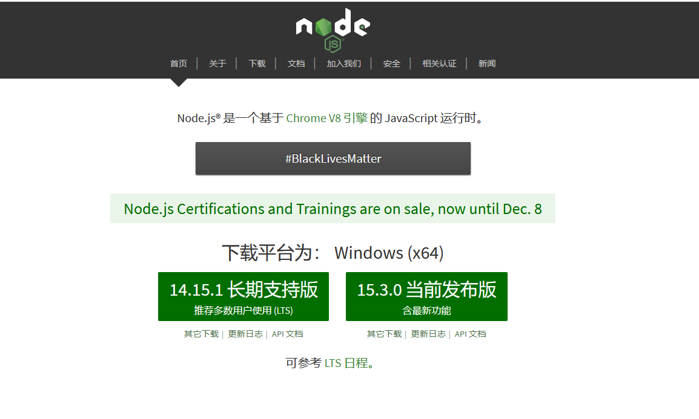
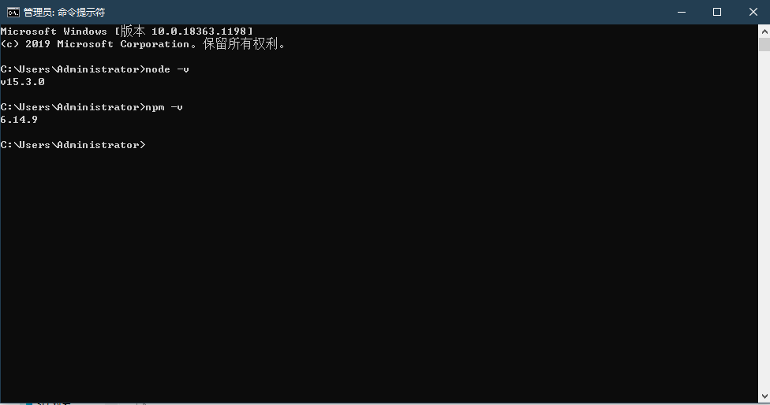
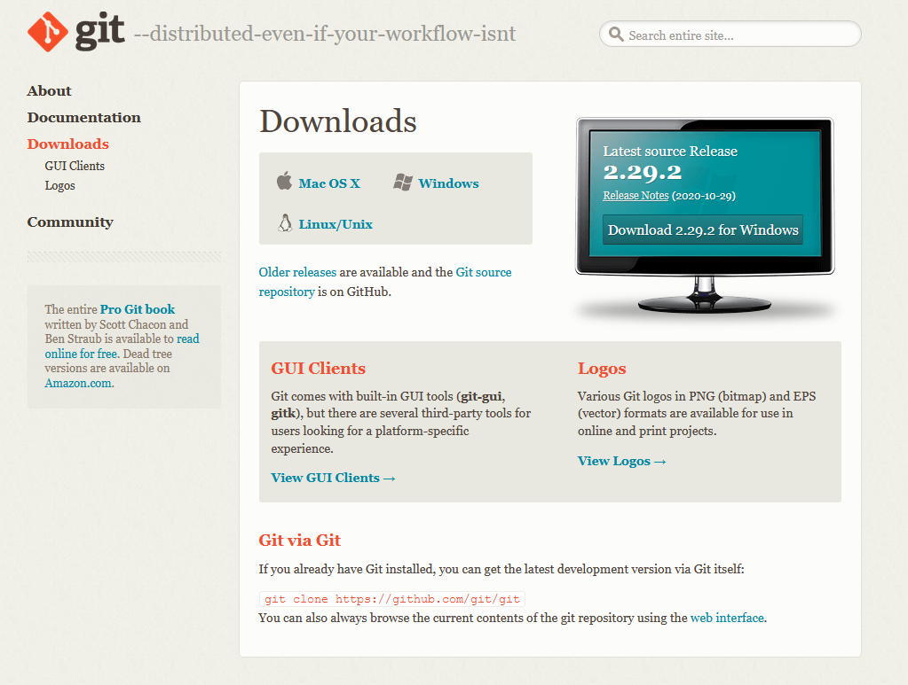
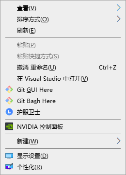
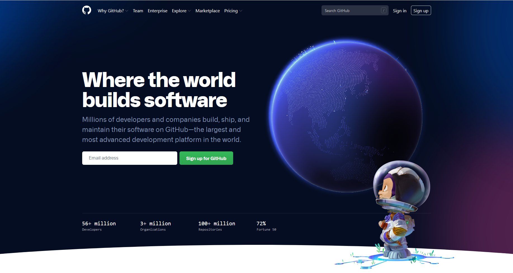

# VuePress+Github Pages 搭建博客（一）
本篇只会介绍需要安装的工具及为什么安装,如果比较熟可以可直接跳过
工具准备
- Node.js
- Git客户端
- Github账号
**Node 下载**
由于vuepress运行在依赖于nodejs环境，因此要先保证本地已经安装了nodejs，没有安装的请移步官网下载
访问 NodeJS官网根据自己的操作系统下载对应的版本后双击安装包使用默认配置就可以
VuePress 需要Node.js 版本要>=8.6

安装选择个目录，我选择装到D:\Program Files\下，不习惯装东西到C盘
Window+R cmd 打开命令行 输入
node -v //查看node版本
npm -v //查看npm版本
2
3

如果能正常查看到对应的版本，说明安装成功了!请参考网上nodejs环境配置，这里不过多叙述。
因为nodejs默认的cach路径在C盘，可以改到其他盘，建议放到nodejs安装的路径下 新建node_cache和node_global
npm config set cache "D:\Program Files\nodejs\node_cache"
npm config set prefix "D:\Program Files\nodejs\node_global"
//以后安装的全局模块都会被放到 D:\Program Files\nodejs\node_global\node_modules下，跟npm模块在一个文件夹中
2
3
**Git下载**
git创建本地仓库，然后上传到github仓库上,通过修改github pages 首页显示为自己的仓库中的html，当然也可以自己买服务器,放到自己服务器上运行

下载完安装包一路next就能看到git的两个右键命令

**GitHub账号**
Github账号主要是为了把我们本地的vuepress上传到GitHub上借助GitHub Pages 来显示博客，相当于把自己的博客托管到github上，外网就能访问的到
感兴趣的小伙伴可以去看下GitHub Pages官网，下面是博主搭建的博客首页,使用了一个相对不错的主题vuepress-theme-reco,当然前期简单点没必要追求主题，主要还是简单使用Vuepress运行起来，让外网能访问到，博主搭建的博客直通车
Github
Github官网地址如果已经有账号请点击右上角Sign in 没有账号的请点击Sign Up注册一个
